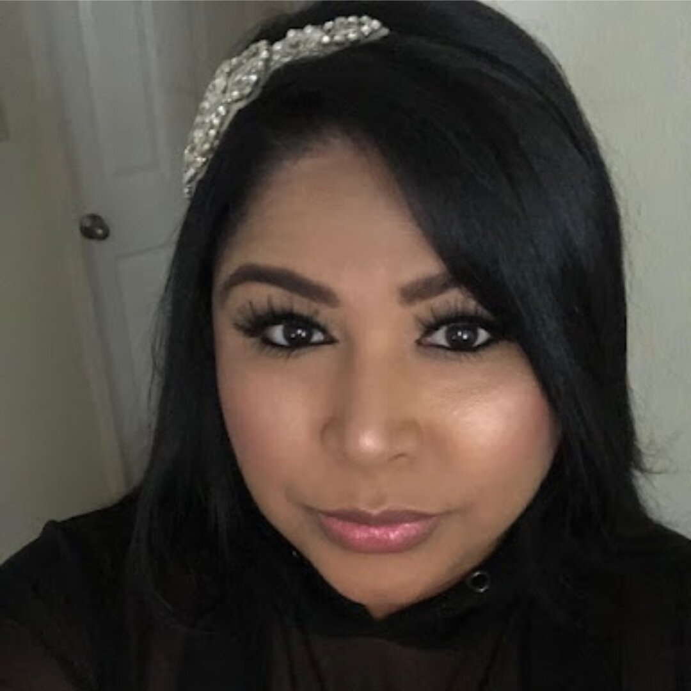

Rowena Wahid
CFO & Secretary
Rowena grew up in San Jose, California and now resides in the East Bay. She holds a degree in Business Administration and has been part of the financial industry since 2008 — starting at Wells Fargo, then Citibank, before moving to Bank of the West / Bank of Montreal, where she still works today.
Rowena loves helping people manage and grow their finances. Having lived through frightening experiences herself, she understands what it feels like to not have been able to speak up as a young child. She is honored to contribute to the growth of Brave Voices and to be a strong advocate for those learning to speak up to protect children.